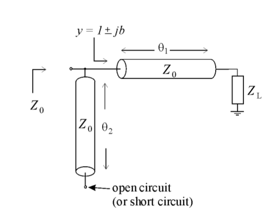

Circuit Design: Single Stub Matching Network¶
Introduction¶
This example illustrates a way to visualize the design space for a single stub matching network. The matching Network consists of a shunt and series stub arranged as shown below, (image taken from R.M. Weikle’s Notes)

A single stub matching network can be designed to produce maximum power transfer to the load, at a single frequency. The matching network has two design parameters:
- length of series tline
- length of shunt tline
This script illustrates how to create a plot of return loss magnitude off the matched load, vs series and shunt line lengths. The optmial designs are then seen as the minima of a 2D surface.
Script¶
import mwavepy as mv
from pylab import *
# Inputs
wg = mv.wr10 # The Media class
f0 = 90 # Design Frequency in GHz
d_start, d_stop = 0,180 # span of tline lengths [degrees]
n = 51 # number of points
Gamma0 = .5 # the reflection coefficient off the load we are matching
# change wg.frequency so we only simulat at f0
wg.frequency = mv.Frequency(f0,f0,1,'ghz')
# create load network
load = wg.load(.5)
# the vector of possible line-lengths to simulate at
d_range = linspace(d_start,d_stop,n)
def single_stub(wb,d):
'''
function to return series-shunt stub matching network, given a
WorkingBand and the electrical lengths of the stubs
'''
return wg.shunt_delay_open(d[1],'deg') ** wg.line(d[0],'deg')
# loop through all line-lengths for series and shunt tlines, and store
# reflection coefficient magnitude in array
output = array([[ (single_stub(wb,[d0,d1])**load).s_mag[0,0,0] \
for d0 in d_range] for d1 in d_range] )
# show the resultant return loss for the parameters space
figure()
title('Series-Shunt Stub Matching Network Design Space (2D)')
imshow(output)
xlabel('Series T-line [deg]')
ylabel('Shunt T-line [deg]')
xticks(range(0,n+1,n/5),d_range[0::n/5])
yticks(range(0,n+1,n/5),d_range[0::n/5])
cbar = colorbar()
cbar.set_label('Return Loss Magnitude')
from mpl_toolkits.mplot3d import Axes3D
fig=figure()
ax = Axes3D(fig)
x,y = meshgrid(d_range, d_range)
ax.plot_surface(x,y,output, rstride=1, cstride=1,cmap=cm.jet)
ax.set_xlabel('Series T-line [deg]')
ax.set_ylabel('Shunt T-line[deg]')
ax.set_zlabel('Return Loss Magnitude')
ax.set_title(r'Series-Shunt Stub Matching Network Design Space (3D)')
draw()
show()